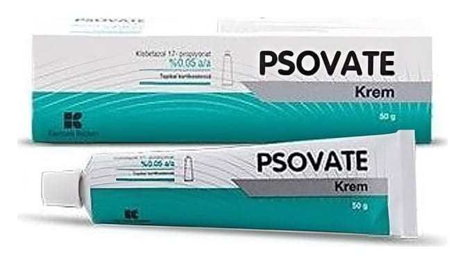

Psovate %0,05 50 g Krem

Ne için kullanılır
KT · Bölüm 1PSOVATE klobetazol propiyonat içeren, topikal steroidler denilen ve deriye sürülen bir ilaç grubunun üyesidir. Topikal kortikosteroidler şişlik ve irritasyonu ( tahrişi) azaltırlar.
PSOVATE krem formunda, beyaz renkte, çözünmemiş madde veya yabancı madde içermeyen homojen krem olarak 25 g ve 50 g’lık tüplerde bulunmaktadır.
PSOVATE belirli deri problemlerinde kaşıntı ve kızarıklığı azaltır. Bu problemler;
- Sıklıkla tekrarlayan egzama - Yaygın plak psöriyazisi hariç olmak üzere psöriyazis (genelde gümüşi pullarla kaplı, kalınlaşmış iltihaplı, kırmızı deri lekeleri) - Liken planus (bileklerde, kollarda veya alt bacaklarda kaşıntılı, kırmızımsı-mor, üstü düz kabarıklara neden olan bir deri hastalığı) - Diskoid lupus eritematozus (en sık olarak yüzü, kulakları ve kafa derisini etkileyen, yara izine ve etkilenen derinin güneş ışığına duyarlılığının artmasına neden olan bir deri hastalığı) - Hafif steroid krem veya merhemlere yanıt vermeyen dermatitler (iltihaplı deri hastalıkları)
veya diğer deri hastalıkları